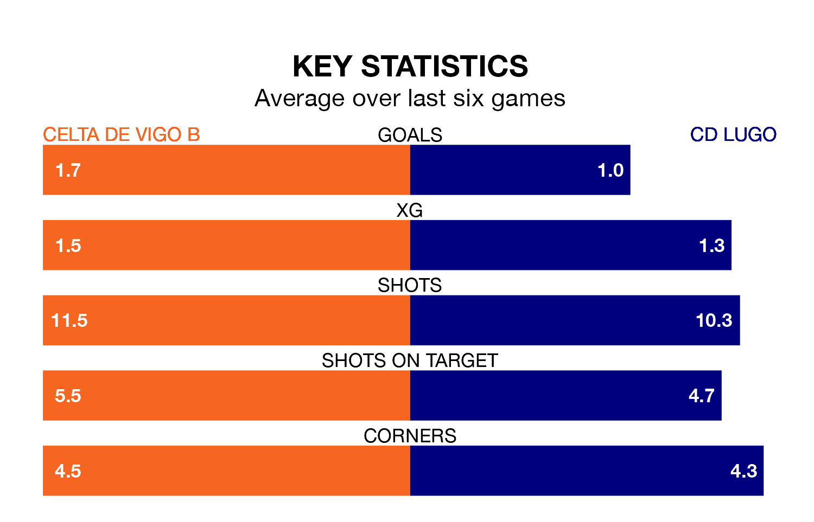

Celta de Vigo B are heavy favourites to keep all three points at home in Sunday's late kick-off against CD Lugo.
Celta, who sit fourth in Primera Division RFEF Group 1 with 31 games played, are priced at 1.6 to seal victory at Campo de Fútbol Municipal de Barreiro.
Sitting six places and 14 points behind them in the table, Lugo are 5.0 to win with *Betting Company*, while the draw is at 3.4.
With 54 goals in 31 games so far this season, Celta are the league's highest scorers with 1.7 goals per game. But they are conceding more than average too, letting in 33 goals at a rate of 1.1 per game.
Lugo, meanwhile, are below average scorers, with 0.8 goals per game, compared to a league average of 1.0. They have conceded 1.1 goals per game.
In Alfonso González Martínez, the home team have one of the league's most on-form strikers so far this season. He has notched eight goals in 24 appearances, to sit second in the scoring charts.
His goal rate of one every 237 minutes is quicker than that of Luis Alfonso Ledesma Galán, the visitors' top scorer with a goal every 278 minutes, and a total of six goals in 21 games.
Celta are in reasonable form in Primera Division RFEF Group 1, with three wins and two draws from their last six games.
With a win and two draws over that period, Lugo's form is much worse – they have taken five points from 18, compared to Celta's 11.
Celta's last match was on April 6, a 4-1 win against Osasuna B, with Pablo Durán Fernández (two), Javier Rueda García and Raúl Blanco Juncal getting the goals for Celta.
Lugo lost 1-0 against SD Tarazona last time out, on April 7.
Updated: 10:01 (UTC), 12/04/24